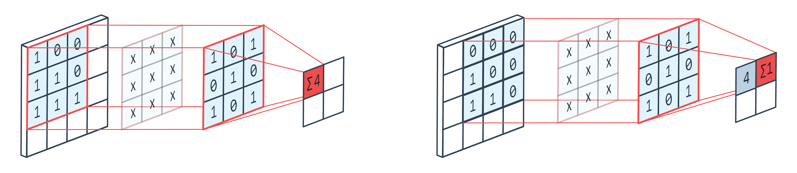
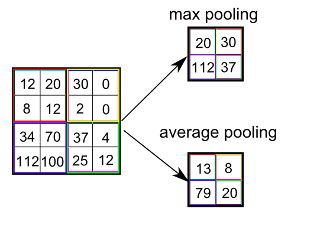
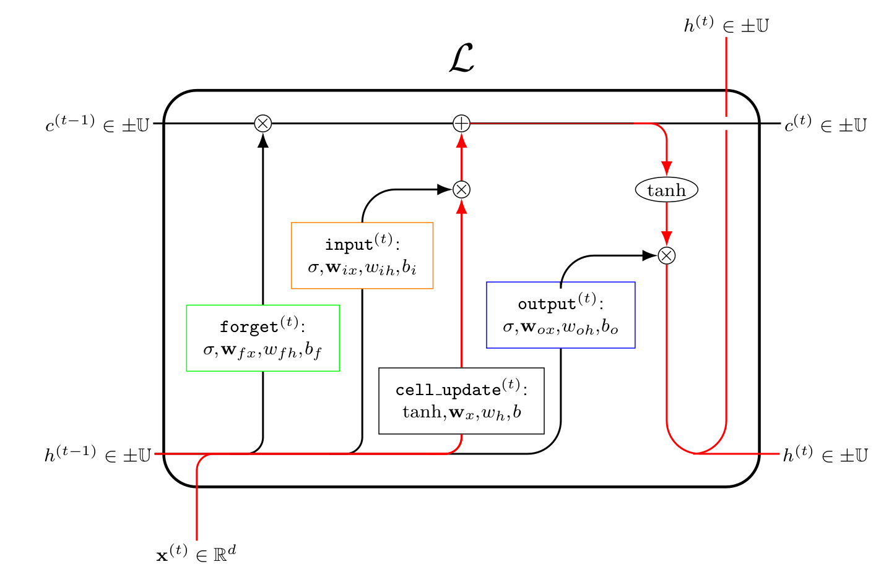

Network Structures
Many different neural network architectures exist. Unsuprisingly, most of them are just standard deep neural networks with hardwired weights or activation functions.
Convolutional Neural Networks (CNNs)
A convolution layer has proven to help neural networks when dealing with images. The idea is that a single pixel should only be affected by neighbouring pixels and not pixels far away. This would involve s etting many weights to zero. This can be taken one step further by enforcing many of the existing weights share values. An example of the convolution operator is shown here:

Which can be represented by a standard neural network layer. The weights are represented by the arrows. Two arrows of the same colour represent the same weight and no arrow implies a zero weight.

Pooling
Pooling is often used along side convolution layers. The idea is to take a small block of the images and squish it into one value.

If we do an average pooling, then the layer can be represented by a single layer. If we wanted to do max pooling then we would have to introduce layer operations. Remember activation functions inside neurons are applied to a scalar, not a vector.

Residual Blocks (ResNet)


Recurrent Neural Networks (RNNs)


Long Short Term Memory Networks (LSTMs)
